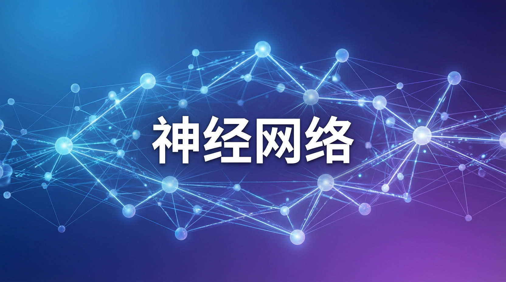

本次報告指出，透過保留核心主機板並替換作業系統環境，25 至 50 部舊款手機即可提供等同現代單機伺服器的運算效能，顯著降低硬體碳足跡。

研究指出，傳統資料中心的運算節點長期依賴專門設計的伺服器硬體，但消費級行動晶片的架構演化已出現顯著轉變。本次測試針對 Pixel Fold 處理核心進行多項基準評估，結果顯示其單核運算效能顯著超越 ASUS RS720A-E11 等主流資料中心機型。專家分析認為，此現象源於行動處理器為適應嚴苛的電源限制，長期針對每瓦效能進行深度優化；相較之下，大型機架伺服器雖具備多核平行處理優勢，單核效能從非設計優先項。
這項技術路徑的突破在於重新檢視電子廢棄物的潛在價值。若將閒置的智慧型手機視為可重配置的微型運算單元，企業與學術機構將能大幅降低初期算力採購門檻。業界觀察亦指出，隨著邊緣運算需求攀升，分散式低功耗節點的應用場景正快速擴張，消費級硬體的角色定位將迎來根本性轉變。
Google 團隊提出的改造方案著重於最大化既有資源的再利用價值。根據碳足跡評估模型，智慧型手機主機板佔據整體內含碳排放量約 50%，因此保留核心電路板並剔除螢幕與電池模組，可有效延續硬體的生命週期。在軟體架構方面，工程人員需將原廠行動版 Android 使用者空間全面替換為通用型 Linux 發行版。
系統重構過程中，開發者必須關閉「低記憶體清除器」等消費級保護機制，以確保長時間運算任務的穩定執行。同時，叢集管理系統需針對異構節點設計負載分配演算法，以應對消費級裝置在網路介面與儲存讀寫上的物理限制。此套標準化作業流程若能進一步模組化，將有利於大規模部署與後續維護。
數據顯示，25 至 50 部經改裝的舊款手機，其聚合算力已足以匹敵一台現代化企業級伺服器。學術機構已展開實地驗證，初步部署的 20 支手機叢集在 75 人同步提交作業的尖峰時段，回應延遲表現優於預設的雲端服務後端。UC San Diego 更已宣布啟動大規模測試計畫，預計於 2026 年秋季完成 2,000 支手機叢集的組裝上線。
該系統預計可釋放相當於 50 台伺服器的運算資源，整體硬體建置成本僅為常規企業採購方案的極小比例。主要效能指標如下：
儘管初步實驗結果令人振奮，但將消費級裝置導入企業級運算環境仍面臨實務考驗。業界觀察指出，行動硬體設計初衷並非針對 24 小時高負載運轉，其散熱模組與元件耐久度在長時間滿載狀態下的可靠度，目前仍缺乏長期追蹤數據。此外，異構節點的故障率與替換機制亦需建立完善的自動化維運框架。
然而，本次研究的深層意義在於挑戰算力基礎架構的傳統框架。若消費級元件足以在特定場景中取代專用伺服器，「算力硬體」的定義將迎來重新定義。專家強調，結合循環經濟與邊緣運算的混合架構，有望成為未來低碳資料中心的重要發展路徑。隨著綠能法規趨嚴與算力需求激增，此類創新部署模式將成為科技產業關注的焦點。
本次研究證實，透過系統級軟體重構與硬體模組化篩選，退役消費電子產品可轉化為具商業價值的低碳運算節點。此模式不僅為電子廢棄物提供高階再利用途徑，亦為學術與新創團隊提供低門檻的高效能運算環境，未來可望重塑雲端資源的獲取模式與資料中心綠能標準。